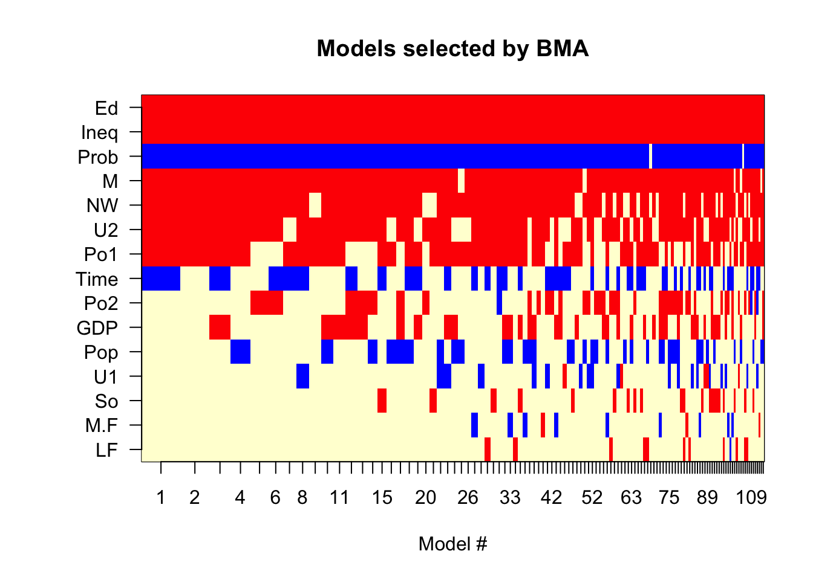

When we develop a model based on \(p\) potential inputs \(x_1, \cdots, x_p\), we do not know a priori what the final model will look like. Within the same model family, for example, linear models or generalized linear models, there are many candidate models, some of which will perform similarly. Even if there is an overall “winner” among the \(2^p\) potential candidates, other models might outperform the “best” model based on other metrics than the one chosen for model selection. Some models might be close to the “best” model in terms of the chosen performance metric.
In other words, there is uncertainty associated with the models themselves. If we choose a single winner then we are ignoring other models that are also defensible. If we try to incorporate all competitive models in our interpretation, the conclusions of data analysis become unwieldy. No one wants to hear about the best 25 models, especially if they lead to conflicting conclusions. Imagine a treatment effect is not significant in the best-fitting model and significant in a slightly inferior model. Different feature selection methods (Section 8.1) will likely lead to different models, all of which are defensible. Backward and forward selection, for example, find different “winners” among different subsets of all possible models.
What should we do?
Raftery (1995) introduced in the context of social science research the idea of Bayesian Model Averaging (BMA), taking into account the inherent uncertainty in models. The implementation of BMA is fairly straightforward, made easy by use of BIC, the Bayesian Information Criterion, and quantities based on that. To understand BMA, we need to take a quick detour into the Bayesian approach to statistical inference.
22.1 Bayesian Inference
The Bayesian paradigm is arguably the more natural paradigm to draw conclusions about the world, compared to the frequentist approach that has permeated this material so far. A frequentist interprets probabilities as a long-run average of sample proportions: if a coin lands on “Head” 45 times out of 100 tosses, the frequentist estimate of the probability of “Head” is 45/100 = 0.45. In Bayesian statistics, probabilities reflect the degree of belief that something will occur. Furthermore, in Bayesian statistic, there are no parameters in the sense of the frequentist view. Parameters are random variables as well.
Suppose we observe data \(\textbf{Y}\) and its distribution depends on a parameter vector \(\boldsymbol{\theta}\). The data we observe is a realization of the distribution \(p(\textbf{Y}|\boldsymbol{\theta})\), known as the likelihood of the data. The likelihood is the probability of observing the data given that \(\boldsymbol{\theta}\) is the true parameter. The goal of the inference, whether the viewpoint is frequentist or Bayesian, is to learn something about \(\boldsymbol{\theta}\). If \(\boldsymbol{\theta}\) is a constant, then what we need to do is to estimate its value based on the data. This is the frequentist approach used so far. The OLS estimator in a linear model, \[
\widehat{\boldsymbol{\theta}} = (\textbf{X}^\prime\textbf{X})^{-1}\textbf{X}^\prime\textbf{Y}
\] is an example of a (frequentist) estimator.
Bayes’ Rule
If \(\boldsymbol{\theta}\) is a random variable then we need to consider its distribution rather than trying to find a point estimator. But which distribution should we consider? We can look at \(p(\boldsymbol{\theta})\) and at \(p(\boldsymbol{\theta}| \textbf{Y})\). The former is known as the prior distribution, reflecting our belief about \(\boldsymbol{\theta}\)before we have seen any data. The latter, \(p(\boldsymbol{\theta}| \textbf{Y})\) is known as the posterior distribution, reflecting our belief in \(\boldsymbol{\theta}\)after having seen the data.
To get from \(p(\textbf{Y}|\boldsymbol{\theta})\) to \(p(\boldsymbol{\theta}| \textbf{Y})\) we have to reverse the conditioning. This can be done with Bayes’ Rule: \[
p(\boldsymbol{\theta}|\textbf{Y}) = \frac{p(\textbf{Y},\boldsymbol{\theta})}{p(\textbf{Y})} = \frac{p(\textbf{Y}|\boldsymbol{\theta}) p(\boldsymbol{\theta})}{\int p(\textbf{Y}| \boldsymbol{\theta}) p(\boldsymbol{\theta}) d\boldsymbol{\theta}}
\] The first fraction is simply the definition of a conditional probability, the ratio of the joint probability divided by the marginal probability of the conditioning event (here, the data). The second fraction expresses the joint probability in the numerator as the product of a conditional and a marginal probability, this time using the reverse condition and the prior distribution. The integral in the denominator computes the marginal distribution of \(\textbf{Y}\) by integrating over the distribution of \(\boldsymbol{\theta}\); this term can be thought of as a normalizing constant to ensure we get a proper probability density. The magic is in the numerator, we can write \[
p(\boldsymbol{\theta}|\textbf{Y}) \propto p(\textbf{Y}|\boldsymbol{\theta}) p(\boldsymbol{\theta})
\]
The posterior distribution is proportional to the likelihood times the prior distribution.
Our prior beliefs about the world, before seeing any data, are represented by \(p(\boldsymbol{\theta})\). After we collected data about the world that follows the distribution \(p(\textbf{Y}|\boldsymbol{\theta})\) we update our beliefs. This makes a lot of sense and reflects how most of us make decisions and draw conclusions. We have a notion and based on evidence we update our belief—at least that is how it is supposed to work.
Example: Are trains on time?
Suppose you need to catch a train at the station. Your prior belief that the train is late is \(p(\theta) = 0.25\): a quarter of the time the train you need to catch will be late. When you arrive at the train station you see that all the other trains are running late today. Based on this new information, \(p(Y|\theta)\), you update your belief; the posterior probability of your train running late is now \(p(\theta) > 0.25\).
To paraphrase L. J. Savage,
You are either Bayesian or irrational.
Inference about \(\boldsymbol{\theta}\)
The posterior distribution \(p(\boldsymbol{\theta}| \textbf{Y})\) contains all information we need to make statements about the parameters. For example, to compute the Bayesian equivalent of a point estimate, standard error, and confidence interval for one of the parameters, \(\theta_1\) say, we first derive the posterior of \(\theta_1\) by integrating out the other parameters: \[
p(\theta_1 | \textbf{Y}) = \int \cdots \int p(\boldsymbol{\theta}| \textbf{y}) d\theta_2 \, d\theta_3 \cdots d\theta_p
\] The square root of the variance of \(p(\theta_1|\textbf{Y})\) is the standard error, the 0.25 and 0.975 quantiles are the 95% confidence bounds, and the mode or mean of the posterior serves as the point estimate.
22.2 Introducing Model Uncertainty
How do we bring uncertainty about models, not just about parameters, into this picture? Suppose we have \(K\) candidate models, \(f_1, \cdots, f_K\) and can quantify our prior belief in the models. Without any additional information the prior belief might be “uninformative”, all models have the same prior probability. The posterior probability of the parameters, \(p(\boldsymbol{\theta}|\textbf{Y})\) can now be written as \[
p(\boldsymbol{\theta}| \textbf{Y}) = \sum_{k=1}^K p(\boldsymbol{\theta}, f_k | \textbf{Y}) = \sum_{k=1}^K p(\boldsymbol{\theta}| \textbf{Y}, f_k) p(f_k|\textbf{Y})
\] integrating over the distribution of the models. The posterior is updated after evaluating the models against data.
Example: Are trains on time?
This example draws on Hinne et al. (2020). Suppose you are at the train station and the train is running late. Should you continue to wait or consider an alternative mode of transportation?
There are different models about the world, with different consequences for the length of delay \(t\):
\(f_1\): the railroad company went bankrupt overnight and abruptly stopped operations; \(t\) is very large, months to years.
\(f_2\): railroad workers went on strike; \(t\) is large, weeks to months.
\(f_3\): a railroad accident occurred; \(t\) is large, hours to days.
\(f_4\): bad weather slowed down the train; \(t\) is short, minutes.
\(f_5\): loading and unloading passengers at the previous station took longer than anticipated; \(t\) is very short, seconds to minutes.
The decision about choosing alternative transportation or waiting for the train to arrive depends on the probabilities of the models \(f_j\) and the distribution of the delays, \(p(t|f_j)\). We are interested in the overall distribution of the delay time, weighted by the likelihoods of the different models \(f_1, \cdots, f_4\).
\(p(t|f_j)\) is the distribution of delay times if \(f_j\) is the reason for the delay.
\(p(f_j)\) is our prior belief that \(f_j\) occurs in the absence of additional information (when we leave the house in the morning).
\(p(f_j|\textbf{Y})\) is the posterior belief that \(f_j\) occurs after receiving information, for example, listening to a station announcement or a weather report.
\(p(t|\textbf{Y})\) is the distribution of the delay after receiving information and averaging across the possible reasons for the delay.
Incorporating model uncertainty means taking into account all possible states of the world, weighted by the likelihood of their occurrence. The prior belief about \(f_j\) will differ from one person to another and that will affect the ultimate decision about choosing alternate transportation. If you wake up in the morning convinced that there will be either a strike or a railroad accident, you will feel differently about traveling by train than the optimist who believes nothing can slow them down.
Bayes Factors and BIC
The posterior distributions of the models, \(p(f_k|\textbf{Y})\), are updated versions of our beliefs once we have seen data. You might not give the possibility of a railroad strike much credence one you find out the morning news did not mention a strike. The extent to which the data support one model over the other is expressed by the ratio of posterior probabilities \[
\frac{p(f_j|\textbf{Y})}{p(f_k|\textbf{Y})}
\] This ratio is called the posterior odds for \(f_j\) versus \(f_k\). But \(p(f_j|\textbf{Y}) = p(\textbf{Y}|f_j)p(f_j)/p(\textbf{Y})\) and the posterior odds expand to \[
\frac{p(f_j|\textbf{Y})}{p(f_k|\textbf{Y})} = \frac{p(\textbf{Y}|f_j)}{p(\textbf{Y}|f_k)} \, \frac{p(f_j)}{p(f_k)}
\] The first term on the right hand side is called a Bayes factor; a measure of the strength of evidence for \(f_j\) over \(f_k\): how much more likely is the observed data under the model \(f_j\) versus the model \(f_k\). In the situation where all models are equally likely a priori, \(p(f_j) = 1/K\), the Bayes factor \(B_{jk}\) is equal to the posterior odds: \[
B_{jk} = \frac{p(f_j|\textbf{Y})}{p(f_k|\textbf{Y})}
\]
To judge the strength of evidence of one model against another, thresholds like the following are in use
\(1 \le B_{jk} \le 3\): \(f_j\) is slightly better than \(f_k\) but deserves no more than a “bare mention”.
\(3 \le B_{jk} \le 10\): there is some evidence for \(f_j\) over \(f_k\).
\(10 \le B_{jk} \le 100\): there is strong evidence for \(f_j\) over \(f_k\).
\(B_{jk} > 100\): \(f_j\) is decisively better than \(f_k\).
The calculation of the distribution of the data for a particular model, \(p(\textbf{Y}|f_j)\) is tricky, we have to integrate over the distribution of the parameters under the model. Fortunately, this can be approximated as \[
\log p(\textbf{Y}|f_j) \approx \log p(\textbf{Y}|\boldsymbol{\theta}_j) - \frac{p_j}{2}\log n
\] The first term on the right hand side is simply the likelihood under model \(f_j\) and \(p_j\) denotes the number of parameters in the model. Minus twice the value of that approximation is known as the Bayesian Information Criterion (BIC). \[
\text{BIC}_j = -2\log p(\textbf{Y}| \boldsymbol{\theta}_j) + p_j \log n
\] It is used to select among competing models based on the maximized likelihood with a penalty term \((p \log n)\) that protects against overfitting. When comparing models, those with smaller BIC values are preferred.
Note
BIC can also be defined as the negative, \(\text{BIC}^*_j = 2\log p(\textbf{Y}|\boldsymbol{\theta}_j) - p_j\log n\). \(\text{BIC}_j\) is interpreted in a smaller-is-better sense. \(\text{BIC}^*_j\) is interpreted in a larger-is-better sense. Always check which version of BIC is reported by software to ensure correct interpretation.
BIC is easy to calculate and helpful to approximate Bayes factors and posterior odds \[
2 \log B_{jk} = \log p(\textbf{Y}| f_j) - \log p(\textbf{Y}| f_k) \approx \text{BIC}_k - \text{BIC}_j
\]
(Raftery 1995, 139) gives ranges for strength of evidence for one model over another based on the BIC difference:
\(0 \le \Delta\text{BIC} \le 2\): weak evidence for \(f_j\) over \(f_k\).
\(2 \le \Delta\text{BIC} \le 6\): positive evidence for \(f_j\) over \(f_k\).
\(6 \le \Delta\text{BIC} \le 10\): strong evidence for \(f_j\) over \(f_k\).
\(\Delta\text{BIC} > 10\): very strong evidence for \(f_j\) over \(f_k\).
Finally, in the case of a uniform prior for the models, \(p(f_j) = 1/K\), the posterior probabilities can be approximated as \[
p(f_j | \textbf{Y}) \approx \frac{\exp\left\{ -\frac{1}{2} \text{BIC}_j\right\}} {\sum_{k=1}^K \exp \left\{-\frac{1}{2}\text{BIC}_k\right\}}
\]
We now have the ingredients to define the Bayesian Model Averaging procedure for regression models.
22.3 BMA for Regression Models
Suppose we have \(p\) candidate input variables in a linear model family \(\textbf{Y}= \textbf{X}\boldsymbol{\beta}+ \boldsymbol{\epsilon}\). You can create \(2^p\) possible models based on the presence and absence of the \(p\) inputs. (This does not count interactions and transformations of the \(p\) variables.)
If the model errors are Gaussian distributed, we can calculate the BIC for each model and approximate posterior probabilities and Bayes factors. Instead of selecting one model as best, a larger number of models is evaluated and the models are ranked according to BIC. However, \(2^p\) is often larger than what we can and should accommodate, so the following selection rules apply: a reduced set of good candidate models is selected according to the leaps-and-bound algorithm. Within the set of models returned by the leaps all-subset algorithm only those models are considered whose posterior probability is within a certain neighborhood of the model with the best BIC value. This neighborhood is called Occam’s window and is expressed as a ratio. For example, an Occam’s ratio of 20 means that models whose posterior probability is less than 1/20 of the posterior probability of the model with the best BIC are excluded.
The models within Occam’s window are the set of models over which predictions are averaged, weighted by their posterior probabilities. This shows us that BMA is an ensemble procedure. If there are \(K\) models within Occam’s window, the predicted value at \(\textbf{x}_0\) is \[
\widehat{y}(\textbf{x}_0) = \sum_{k=1}^K \widehat{p}(f_k | \textbf{Y}) \, \textbf{x}_{0k}^\prime\widehat{\boldsymbol{\beta}}_k
\] and \(\textbf{x}_{0k}\) is the set of inputs in the \(k\)th model, \(\widehat{\boldsymbol{\beta}}_k\) is the vector of coefficient estimates in the \(k\)th model.
Example: Crime Rates Data
This example uses the UScrime data from the MASS library in R. The data set represents aggregate data on 47 states in the U.S. for 1960. In addition to the target variable, the rate of crimes per person in a particularly category, the data set contains information about income equality, GDP, population, education, unemployment, prison population, police expenditures, and demographics.
Bayesian model averaging for linear regression models can be performed with the bicreg function in the BMA library. bicreg uses the leaps all-subset algorithm to select variables into the models. By default, up to nbest=150 models of each size are considered. nbest is not the total number of models being averaged, but the max number of models of any size returned by leaps.
The OR parameter specifies the maximum ratio for excluding models in Occam’s window. A model that is not at least within 1/OR of the BIC of the best model is excluded from consideration.
bicreg uses the smaller-is-better formulation for BIC.
library(MASS)library(BMA)data(UScrime)x <- UScrime[,-16]y <-log(UScrime[,16])x[,-2]<-log(x[,-2]) # log transform all except binary indicator in second colcrimeBMA <-bicreg(x,y, OR=20)summary(crimeBMA)
Call:
bicreg(x = x, y = y, OR = 20)
115 models were selected
Best 5 models (cumulative posterior probability = 0.2039 ):
p!=0 EV SD model 1 model 2 model 3
Intercept 100.0 -23.45301 5.58897 -22.63715 -24.38362 -25.94554
M 97.3 1.38103 0.53531 1.47803 1.51437 1.60455
So 11.7 0.01398 0.05640 . . .
Ed 100.0 2.12101 0.52527 2.22117 2.38935 1.99973
Po1 72.2 0.64849 0.46544 0.85244 0.91047 0.73577
Po2 32.0 0.24735 0.43829 . . .
LF 6.0 0.01834 0.16242 . . .
M.F 7.0 -0.06285 0.46566 . . .
Pop 30.1 -0.01862 0.03626 . . .
NW 88.0 0.08894 0.05089 0.10888 0.08456 0.11191
U1 15.1 -0.03282 0.14586 . . .
U2 80.7 0.26761 0.19882 0.28874 0.32169 0.27422
GDP 31.9 0.18726 0.34986 . . 0.54105
Ineq 100.0 1.38180 0.33460 1.23775 1.23088 1.41942
Prob 99.2 -0.24962 0.09999 -0.31040 -0.19062 -0.29989
Time 43.7 -0.12463 0.17627 -0.28659 . -0.29682
nVar 8 7 9
r2 0.842 0.826 0.851
BIC -55.91243 -55.36499 -54.69225
post prob 0.062 0.047 0.034
model 4 model 5
Intercept -22.80644 -24.50477
M 1.26830 1.46061
So . .
Ed 2.17788 2.39875
Po1 0.98597 .
Po2 . 0.90689
LF . .
M.F . .
Pop -0.05685 .
NW 0.09745 0.08534
U1 . .
U2 0.28054 0.32977
GDP . .
Ineq 1.32157 1.29370
Prob -0.21636 -0.20614
Time . .
nVar 8 7
r2 0.838 0.823
BIC -54.60434 -54.40788
post prob 0.032 0.029
Only five of the 115 models are shown on the output, information on all models can be retrieved from the return object of bicreg.
Of the 150 models returned by the leaps algorithm, 115 were selected within Occam’s ratio of 1/20. The best model has a BIC of -55.9124 and a posterior probability of 0.0619. The posterior probability of the final model within Occam’s window is crimeBMA$postprob[115] = 0.0031.
The column EV displays the posterior means (expected values) of the model coefficients, averaged across the 115 models. The p!=0 column displays the proportion of models that include the particular input. For example, the intercept is included in all models, 11.7% of the models include the So variable, 100% of the models include the Ed variable.
The \(R^2\) values of the models are also shown in the third row from the bottom of the output. Notice that the best model according to BIC does not have the highest \(R^2\) and the model with a higher \(R^2\) does not necessarily have a higher posterior probability.
The predict function computes statistics based on the posterior distribution of the model. The predicted values are calculated as the means of the posterior distribution, averaging all 115 models. Because we are computing summary statistics of the posterior distribution, standard deviation and quantiles are also immediately accessible.
Here are the means, standard deviations, and 0.1, 0.5, 0.9 quantiles for the first 10 observations.
To validate the computation of a predicted value as a weighted average of predictions, where the weights are the posterior probabilities, we can extract the coefficients of the 115 models with crimeBMA$ols, multiply those into the \(\textbf{X}\) matrix and compute the weighted average:
# The predicted values for the first ten obs from all modelspred_1_10 <-as.matrix(crimeBMA$ols) %*%as.matrix(t(cbind(1,x[1:10,])))# The final predicted value is weighted by the posterior probabilitiescrimeBMA$postprob %*% pred_1_10
The plot function produces a series of plots of the posterior distributions for the coefficients (Figure 22.1). The height of the vertical line at zero indicates the probability that the coefficient is zero. The non-zero probability is scaled so that the maximum of the distribution equals the complement of the height of the line. Coefficients that appear in almost all models have a very short vertical line at zero.
Figure 22.2 shows an image plot of the selected models. The order=probne0 option requests that the variables are shown in the order of their probability of inclusion in the model. Variables near the top of the image have the highest inclusion probability (appear in most or all models).
There are three colors in the image, one color for a positive coefficient (red), one color for a negative coefficient (blue), and one color indicating absence from the model. The width of the bars is proportional to the posterior probability of the models.
imageplot.bma(crimeBMA,order="probne0")

Figure 22.2
Hinne, Max, Quentin F. Gronau, Don van den Bergh, and Eric-Jan Wagenmakers. 2020. “A Conceptual Introduction to Bayesian Model Averaging.”Advances in Methods and Practices in Psychological Science 3 (2): 200–215. https://doi.org/10.1177/2515245919898657.
Raftery, Adrian E. 1995. “Bayesian Model Selection in Social Research.”Sociological Methodology 25: 111–63.